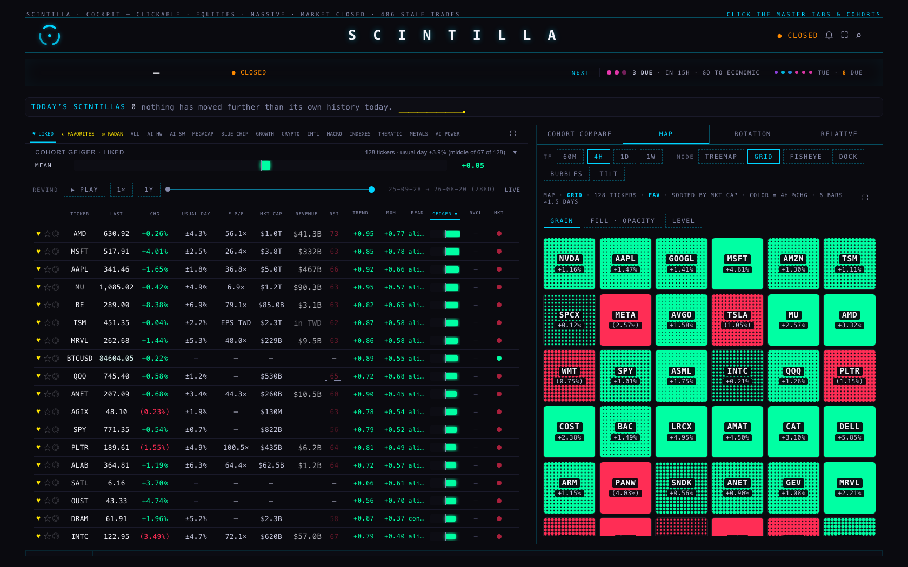
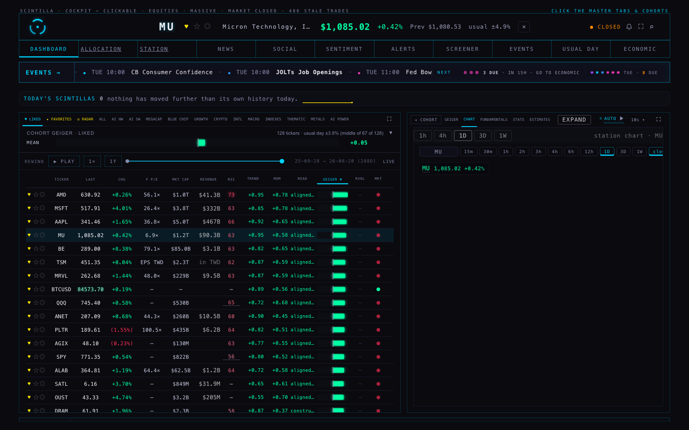
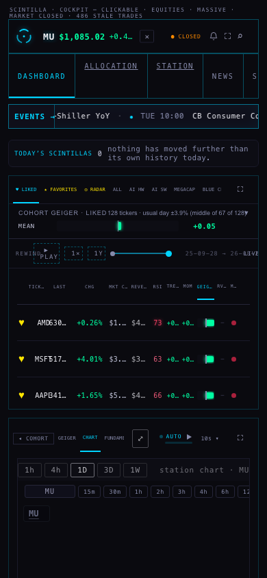
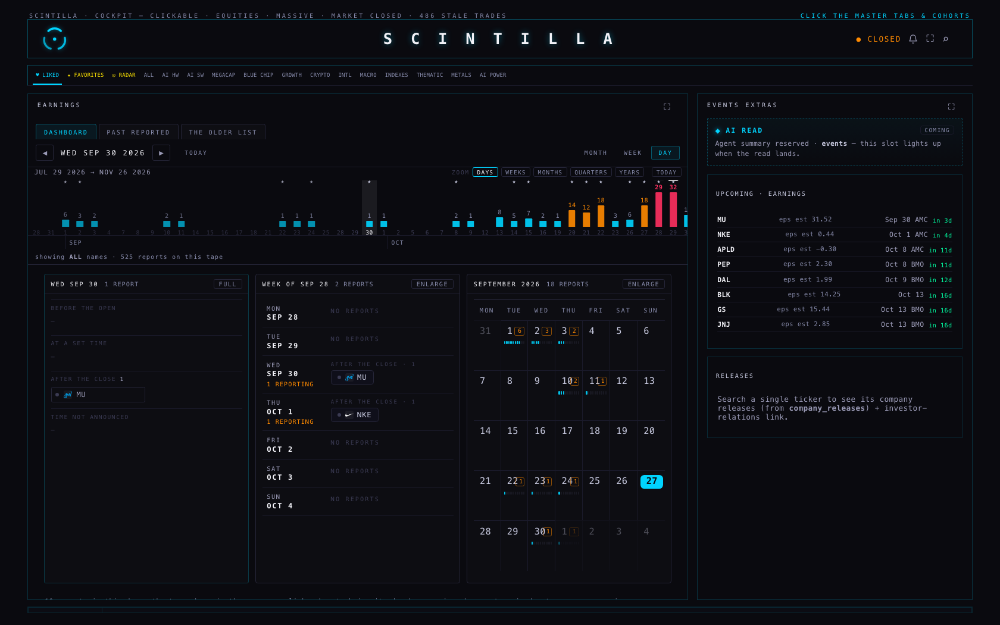
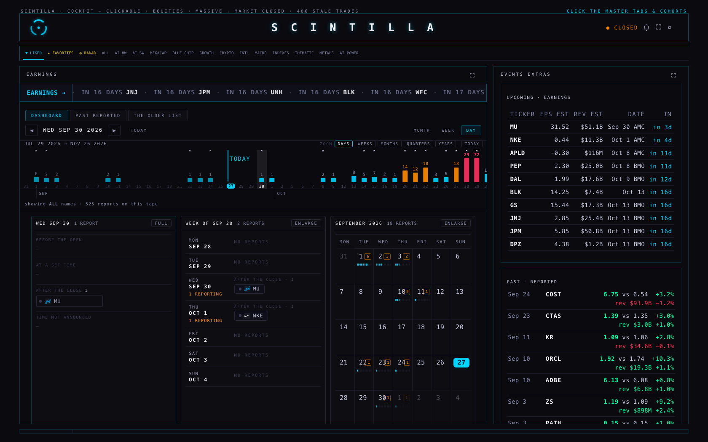
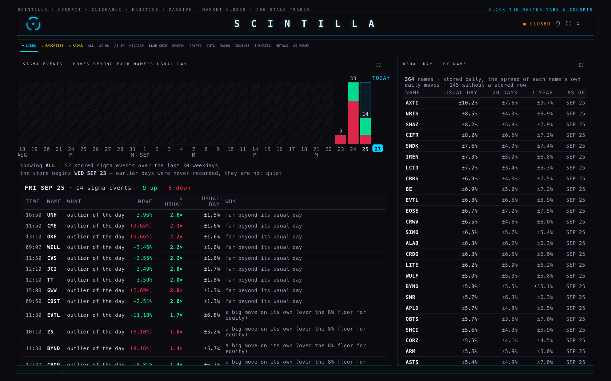
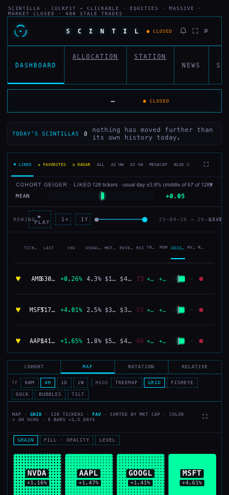
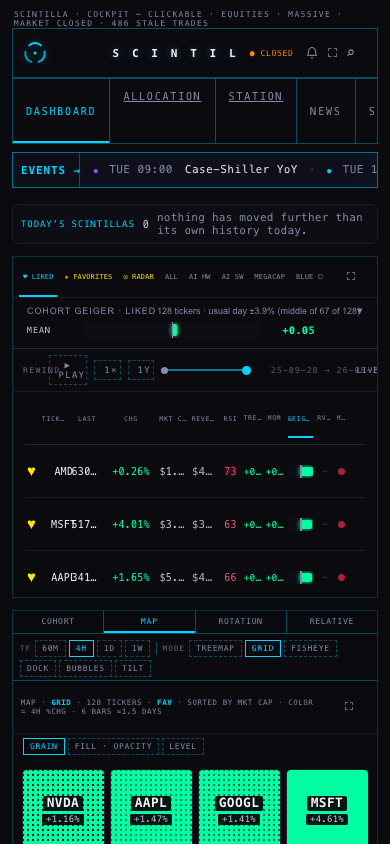
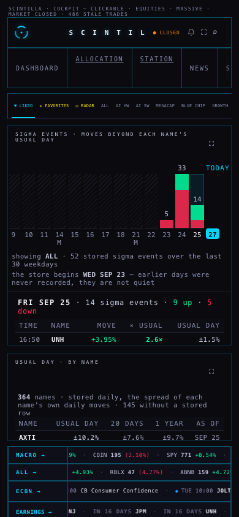
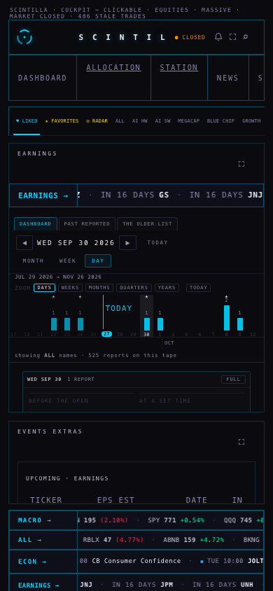

THE TAPE, THE EARNINGS ROOM, USUAL DAY
27 Sep 2026 · Hub branch candidate/tape-events-20260927 off hub/release-20260923 @ e39694d · built from your notes, section C · not deployed
What changed, in one screen each
1 · The company bar is gone. That strip is now the scintillating tape.

- What rides it: the releases the NEXT queue already watches (US, high and medium importance, M2; no oil stocks, auctions or mortgage surveys) and the earnings of the names the Hub tracks. It covers this week so far and the next seven days.
- How it scintillates: exactly like the bands at the foot of the screen. A release is still until the hour before it, breathes inside the hour, tightens inside ten minutes and pulses at its minute. An earnings result beyond that name's own usual surprise wears the ◆ and glows once. A "now" mark shows where the past ends.
- Tap: a release opens its day in ECONOMIC; a ticker opens its company.
2 · Pick a ticker: it goes into the SCINTILLA title. ✕ brings the title back.


3 · Earnings room


- TODAY on the slider. It was already there, but only inside today's bar, and the day view draws weekdays only. On a Saturday or Sunday it had nowhere to sit, so it vanished. Today now always gets a bar, and the line is labelled.
- Upcoming is a compact table: TICKER · EPS EST · REV EST · DATE with BMO/AMC · IN. The "in 3d" keeps its colour. Anything not stored shows "—", never a zero.
- PAST · REPORTED sits under it and scrolls inside its own card: EPS against the estimate, the beat or miss %, and the revenue beat or miss, in green / red.
- AI READ removed.
4 · USUAL DAY + sigma events have their own tab

#usual). Left: a weekday slider of stored sigma events, up on top of down. Friday 25 Sep is open with its 14. Right: every name's usual day, biggest first.- Why Friday's had "gone": TODAY'S SCINTILLAS only ever shows today, so on a weekend it reads 0. They were stored all along: Wed 23 (5), Thu 24 (33), Fri 25 (14 price moves).
- The slider covers the last 30 weekdays. The days before the store began (23 Sep) are hatched and say "never recorded". They were not quiet days.
- Pick a day to list its events: time, name, the move, how many usual days that is, the usual day itself, and which rule fired.
- The USUAL DAY column left the board. The number is still in the header title for a picked name, and in the cohort line above the board.
5 · The pink dots beside NEXT
You said Fed Bowman, Dallas Fed and Barkin showed pink but weren't scintillating. Two things were going on:
- Pink is not a flash, it is a category. Pink is the calendar's colour for CENTRAL BANK. The rule is "still until the hour before", so fifteen hours out they should not move. That part was correct.
- The rule was broken the other way. When three or more releases fall on one day, the queue shows them as a group of dots ("3 DUE · IN 15H"). Those dots flashed hard at any distance: measured on production code, 1.1 s / 0.9 s / 1.3 s pulses, fifteen hours early. They now follow the same rule as a single release: still, then breathing inside the hour, then faster. Hovering the group now names the releases and says what the colour means.
- Spotted, not changed: "Dallas Fed Manufacturing Index" is filed as CENTRAL BANK because its name contains "Fed". It is a regional factory survey, so it arguably belongs under GROWTH. That is one reason the pink read as "the Fed".
6 · Why the RSI column looked greyed out
It was a styling choice, not stale data. The RSI number is the stored daily RSI(14), and it only paints when its session is current. The colour ran from 15% strength at RSI 50 to 90% at the extremes, so an ordinary 63 was drawn at 35% strength on a dark panel. That reads as "switched off". Measured on production: 63 at 0.35 opacity.
Fixed: every RSI number is now drawn at full strength. The gradient moved into the colour instead: a readable neutral that turns redder above 50 and greener below. At an extreme (30 or under, 70 or over) the number breathes softly, with a slow 4-second glow and no movement. It turns off for anyone who has reduced motion switched on.
Where each number comes from
| On screen | Source (read only) |
|---|---|
| Tape: releases | econ_calendar, the same single read the NEXT queue and ECON band already make. The tape adds no request. |
| Tape: earnings; earnings room tape | earnings_events, the same single read the EARNINGS band already makes. No new request. |
| Upcoming table, PAST · REPORTED | earnings_events (eps_estimate, revenue_estimate, eps_actual, revenue_actual, surprise_pct), the room's existing read. |
| Sigma events | scintillas, written by the scintillas detector: last 60 days, one read per 5 minutes while the room is open. Only price_outlier, earnings_surprise and econ_surprise count. |
| Usual day by name | ticker_heartbeat_daily (usual_day_60 / _20 / _250), the board's own read. |
| RSI | Unchanged: provider_indicators_current, FMP daily RSI(14). |
What could be wrong
- Earnings have a day and "before the open / after the close", not a minute. On the tape, before-open is placed at 07:00 ET and after-close at 16:05, only so the order makes sense.
- The sigma-event store only began on Wed 23 Sep. Until it fills, the slider is mostly hatched.
- 145 of the 486 names have no stored usual day (mostly the GEIGER-ONLY names). The table says how many are missing.
- On the phone the change figure in the title can be cut to "+0.4…" so that ✕ always fits.
- The econ calendar showed an actual for next Wednesday's GDP ("1.5 vs 1.6") before the date. That is what the supplier stored. The tape just shows it.
- Once in 7 headless runs, the earnings slider had scrolled itself back to spring (its "load more season" behaviour). It did not happen again in 6 checks, on either this branch or production code.
- Local screenshots: I served the branch from this MacBook and relaxed the browser's cross-origin check in the headless test browser, because the data services only answer scintillahub.ai. No window opened on screen.
What I did not do
- No push, no deploy, no database write, no schedule.
- The consolidation of COHORT COMPARE / MAP / ROTATION / RELATIVE / SECTORS: proposal only, on its own page (CONSOLIDATION-PROPOSAL).
- I did not recategorise "Dallas Fed Manufacturing" (it's your call, see above).
- TODAY'S SCINTILLAS (the one line above the board) stays on the dashboard; it was not in the board table.
- Seen but not mine to fix (also on production): on the phone the wordmark is cut to "S C I N T I L", and the board's ticker and price touch ("AMD630…").
Evidence




Tests: 998 run, 991 pass, 5 fail. The same 5 fail on production e39694d (Indicator Lab checkpoint, "every place this surface prints an age", readiness, saved review charts, xfeed-publish). 11 new tests cover this work. At 1680 and 390: no page errors and no sideways scroll.